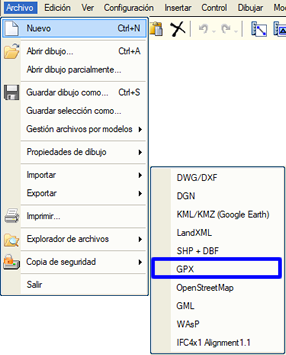
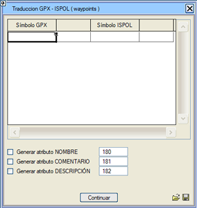
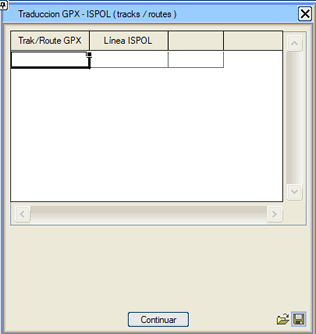

| |
|
GPX DOSYALARINI İÇE AKTARMA
|
|
GPX, veya GPS eXchange Format (GPS Değişim Formatı), uygulamalar arasında GPS verilerini aktarmak için tasarlanmış bir XML şemasıdır. Noktaları (waypoints), güzergah izlerini (tracks) ve rotaları (routes) tanımlamak için kullanılabilir. Bu, GPS takip ve navigasyon uygulamaları tarafından yaygın olarak kullanılan standart ve açık bir dosya türüdür.
Yol noktaları (waypoints) sembollere, rotalar (routes) ve izler (tracks) ise polilinlere dönüşür. İlişkiyi oluşturmak için art arda iki iletişim kutusu bulunur; önce semboller, sonra da polilinler için. Aynı kaynaktan gelen birçok dosyanın eklenmesini kolaylaştırmak için, sembol ve çizgi dönüşüm sözlüklerinin daha sonra yeniden kullanılmak üzere .txt dosyalarına kaydedilmesine izin verilir. İlk iletişim kutusunda her bir yol noktası (GPX sembolü) bir ISPOL sembolü ile ilişkilendirilir. 
AD özniteliğini oluştur: .gpx dosyasının AD özniteliğini bir metin olarak EDM'ye (Sayısal Harita Editörü) ekler, kutucukta kullanılacak yazı stili için numara belirtilir. YORUM özniteliğini oluştur: .gpx dosyasının YORUM özniteliğini bir metin olarak EDM'ye ekler, kutucukta kullanılacak yazı stili için numara belirtilir. AÇIKLAMA özniteliğini oluştur: .gpx dosyasının AÇIKLAMA özniteliğini bir metin olarak EDM'ye ekler, kutucukta kullanılacak yazı stili için numara belirtilir. Simgeler aracılığıyla:  yol noktaları (waypoints) ve Istram sembolleri arasında bir dönüşüm sözlüğü içeren bir .txt dosyası oluşturulur. yol noktaları (waypoints) ve Istram sembolleri arasında bir dönüşüm sözlüğü içeren bir .txt dosyası oluşturulur. yol noktaları (waypoints) ve Istram sembolleri ilişkisini içeren bir .txt dönüşüm sözlüğü yüklenir. yol noktaları (waypoints) ve Istram sembolleri ilişkisini içeren bir .txt dönüşüm sözlüğü yüklenir.Devam Et'e tıklandığında, xxx.gpx dosyasındaki yol noktalarının sembol olarak içe aktarılması tamamlanmış olur (xxx dosya adıdır). Hemen ardından GPX dosyasındaki iz/rota (track/route) dönüşüm iletişim kutusu açılır. 
İzleri (track) polilinlere dönüştürmek için işlem tekrarlanır. Simgeler aracılığıyla: izler/rotaların (tracks/routes) Istram polilinlerine dönüştürülmesi için bir dönüşüm sözlüğü içeren bir .txt dosyası oluşturulur. izler/rotaların (tracks/routes) Istram polilinlerine ilişkisini içeren bir .txt dönüşüm sözlüğü yüklenir.Devam Et kutucuğu aracılığıyla içe aktarma işlemini tamamlamış oluruz. |